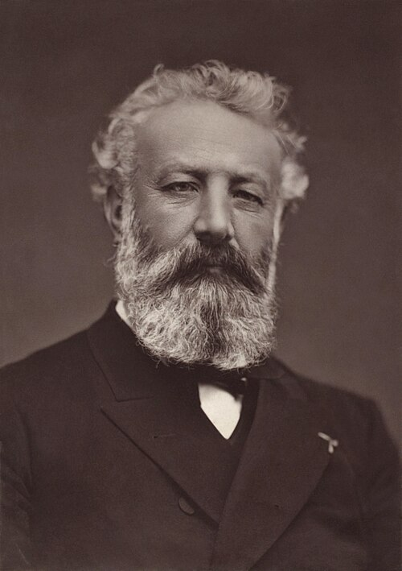

Jules Verne
Uteliaisuus vie kartan reunan yli.
Vernen seikkailuissa matkanteko on myös tapa oppia katsomaan maailmaa. Tieto, kekseliäisyys ja uhkarohkeus joutuvat koetukselle odottamattomissa oloissa.
Etsi teokset kirjastostaElämä ja teokset
Jules Verne syntyi Nantesissa vuonna 1828. Hän kirjoitti romaaneja, näytelmiä ja muita tekstejä. Yhteistyö kustantaja Pierre-Jules Hetzelin kanssa synnytti laajan Ihmeellisiä matkoja -romaanisarjan.
Matka maan keskipisteeseen, Sukelluslaivalla maapallon ympäri ja Maailman ympäri kahdeksassakymmenessä päivässä yhdistivät seikkailun aikansa maantieteelliseen ja tieteelliseen tietoon. Vernen kuvitteelliset matkat kuljettivat lukijoita maan alle, merille ja halki maanosien.
Tyyli ja teemat
Tarkat yksityiskohdat tekevät mahdottomaltakin tuntuvasta matkasta konkreettisen. Luettelot ja selitykset vuorottelevat vaaratilanteiden, huumorin ja ripeän toiminnan kanssa. Henkilöiden erilaiset temperamentit pitävät tiedon ja innostuksen jatkuvassa kitkassa.
Matka · Tiede · Kekseliäisyys
Aloita tästä
Maailman ympäri kahdeksassakymmenessä päivässä
Phileas Fogg lyö vedon ja lähtee matkalle, jolla aikataulu joutuu jatkuvasti koetukselle. Vauhdikas seikkailu täsmällisyyden ja yllätyksen kamppailusta.
Matka maan keskipisteeseen
Salaperäinen viesti johdattaa retkikunnan Islantiin ja maan uumeniin. Löytöretki yhdistää luonnon ihmeet, tieteellisen uteliaisuuden ja vaaran.
Huomaa, milloin tieto auttaa matkalaisia ja milloin liian varma usko omaan tietoon vaikeuttaa tilannetta.